Project
프로젝트 혹은 팀 별로 업무를 등록하고 등록된 업무의 이력을 관리할 수 있습니다.
프로젝트/팀 별 업무 관리
Project Service를 통한 프로젝트/팀 별 업무 관리 방법을 설명합니다.
1. 프로젝트/팀 생성
프로젝트, 팀을 생성하고 구성원을 추가합니다.
1.1 프로젝트, 팀 생성
Project - Configuration - Project Managmenet
새로운 프로젝트, 팀을 생성합니다.
-
[Create Project] 버튼을 클릭합니다.
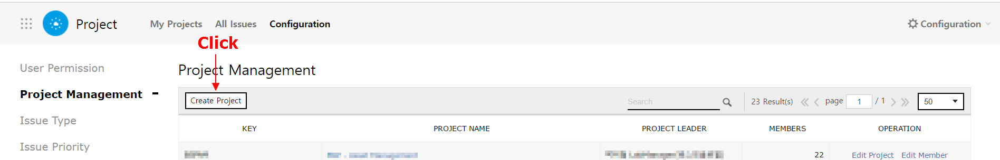
-
"Create Project" 화면에서 프로젝트, 팀 정보를 입력합니다.
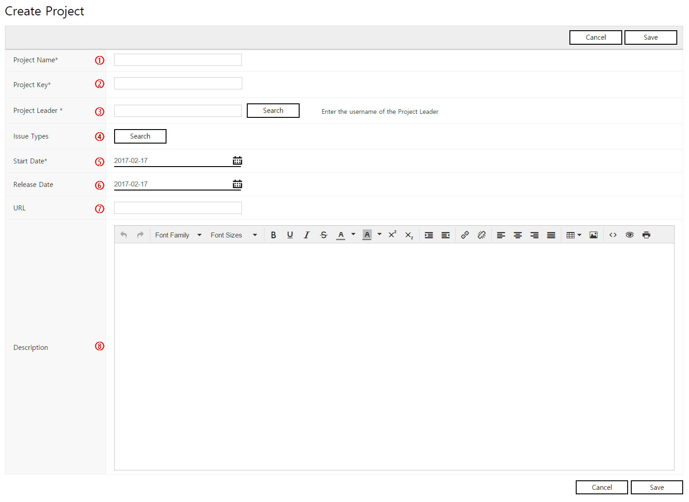
No Name Required Description ① Project Name Required 새롭게 생성할 프로젝트, 팀의 이름을 입력합니다. ② Project key Required 프로젝트, 팀을 식별하기 위한 고유 코드를 입력합니다.
20자 이내의 영문, 숫자, 특수문자 '.','-','_' 만 입력 가능합니다.③ Project Leader Required 프로젝트, 팀의 관리자를 지정할 수 있습니다.
[Search] 버튼 클릭 시 "Search Leader" 팝업이 표시되며 추가할 프로젝트, 팀의 관리자로 지정할 사용자를 선택할 수 있습니다.
복수의 사용자를 관리자로 지정할 수는 없습니다.④ Issue Type . 프로젝트, 팀에서 수행되는 업무의 종류를 선택할 수 있습니다.
[Search] 버튼 클릭 시 "Issue Type" 팝업이 표시되며, 이 목록에서 수행할 업무를 선택할 수 있습니다.⑤ Start Date Required 프로젝트의 시작 날짜를 선택할 수 있습니다.
기본값으로 현재 날짜가 표시되며, [캘린더] 버튼을 클릭해 표시되는 캘린더에서 날짜를 변경할 수 있습니다.⑥ Release Date . 프로젝트 종료일을 선택할 수 있습니다.
기본값으로 현재 날짜가 표시되며, [캘린더] 버튼을 클릭해 표시되는 캘린더에서 날짜를 변경할 수 있습니다.⑦ URL . 프로젝트가 서비스되고 있는 URL을 입력할 수 있습니다. ⑦ Description . 생성할 프로젝트, 팀에 대한 설명을 입력합니다.
텍스트 편집기를 통해 자유롭게 입력할 수 있습니다. -
[Save] 버튼을 클릭합니다.
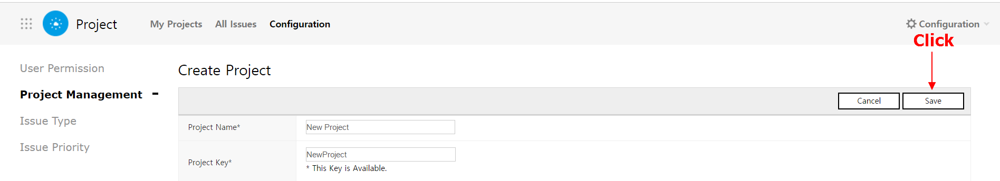
-
"My Project" 메뉴를 클릭해 프로젝트 목록 화면으로 이동합니다. 프로젝트 목록 화면에서 새로운 프로젝트가 추가되었음을 확인할 수 있습니다.
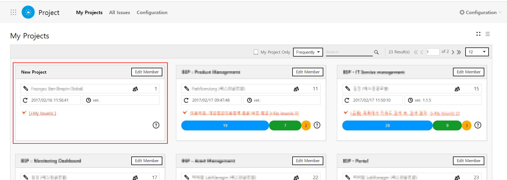
1.2 구성원 편집
Project - Configuration - Project Managmenet
새롭게 생성된 프로젝트, 팀에 함께 업무를 진행할 구성원을 추가합니다.
이미 추가된 프로젝트, 팀의 구성원을 변경합니다.
-
프로젝트 목록에서 구성원을 추가/편집할 프로젝트의 [Edit Member] 버튼을 클릭합니다.
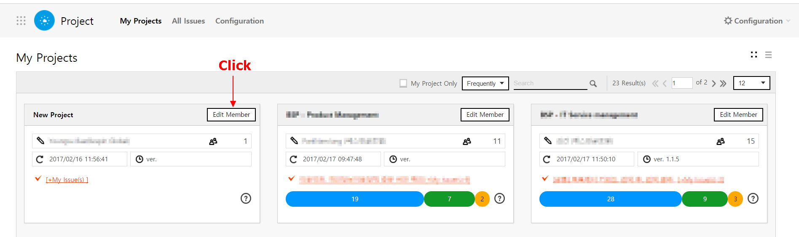
-
왼쪽 목록에 전체 사용자가, 오른쪽 목록에 현재 프로젝트, 팀에 추가된 사용자가 표시됩니다. 해당 프로젝트, 팀의 구성원을 왼쪽 목록에서 선택해 오른쪽 목록에 추가합니다.
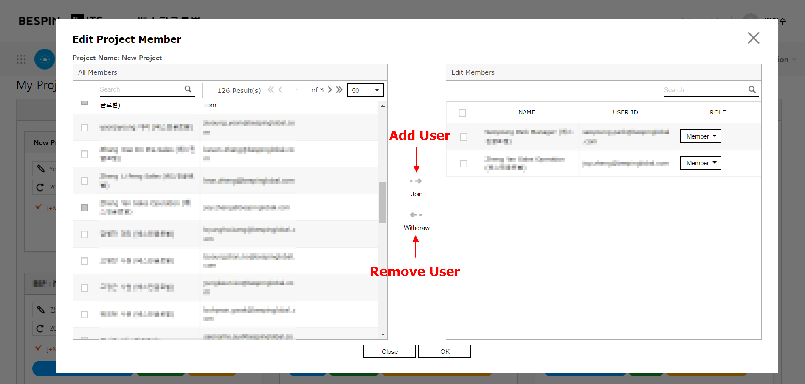
-
오른쪽 목록에 추가한 구성원의 권한을 설정합니다.
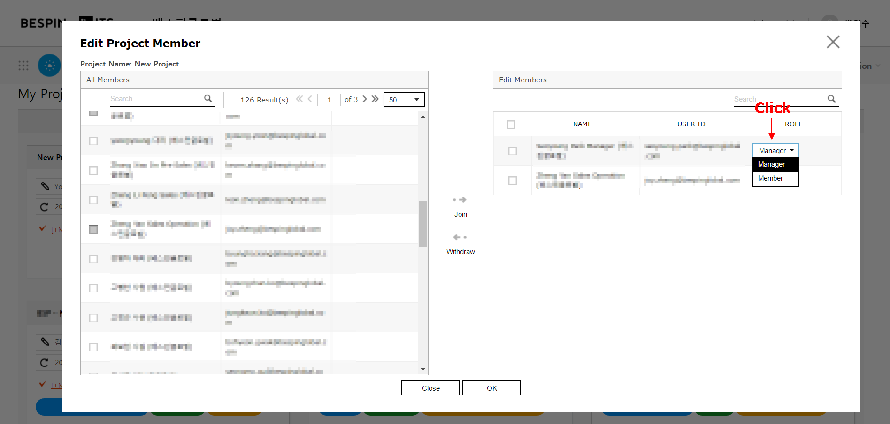
-
[OK] 버튼을 클릭해 변경 내용을 저장합니다. 프로젝트 목록에서 프로젝트의 구성원이 추가되었음을 확인할 수 있습니다.
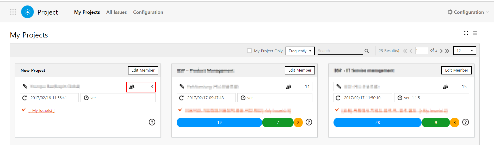
1.3 업무 종류 설정
Project - Configuration - Issue Type
업무의 종류별 구분을 위한 'Issue Type'을 설정할 수 있습니다.
-
"Issue Type" 메뉴에서 현재 추가된 Issue Type의 목록을 확인할 수 있습니다.
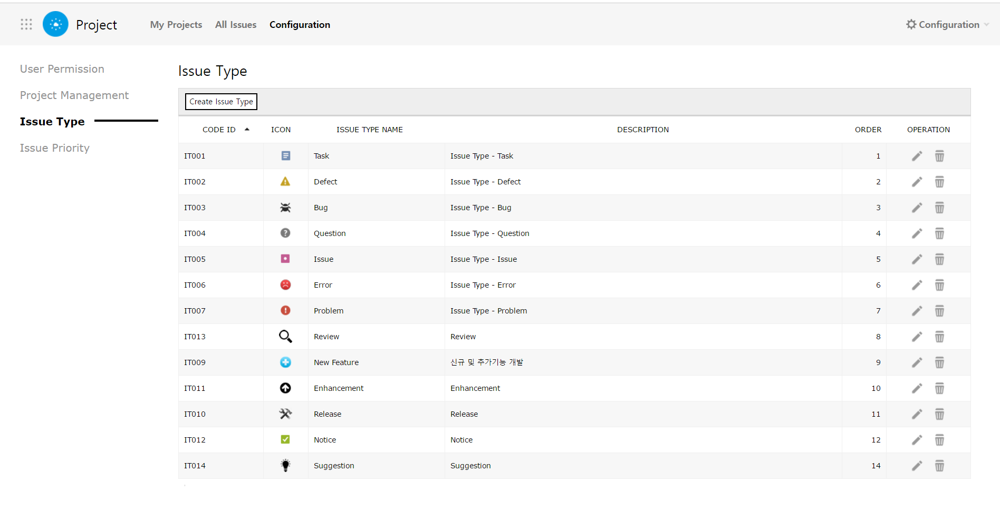
-
"Issue Type" 화면에서 [Create Issue Type] 버튼을 클릭합니다.
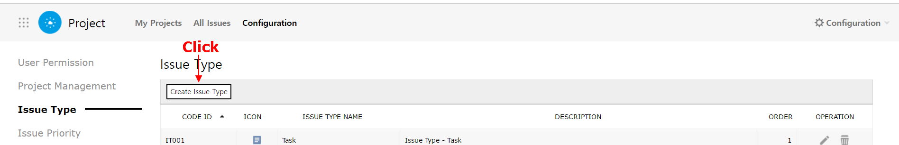
-
"Create Issue Type" 팝업이 표시되며, 추가할 Issue Type 의 정보를 입력할 수 있습니다.
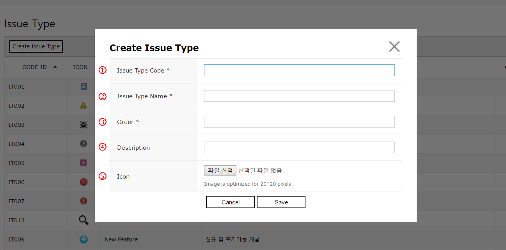
No Name Required Description ① Issue Type Code Required 새롭게 생성할 Issue Type을 식별하기 위한 고유 코드를 입력합니다. ② Issue Type Name Required Issue Type의 이름을 입력합니다.
여기에 입력된 내용이 업무의 이름으로 표시됩니다.③ Order Required Issue Type 목록에서 표시될 순서를 지정할 수 있습니다.
숫자만 입력 가능합니다.④ Description . Issue Type에 대한 설명을 입력할 수 있습니다. ⑤ Icon Required Issue Type 목록에 표시될 아이콘을 업로드 할 수 있습니다. -
[OK] 버튼을 클릭하면 팝업이 종료됩니다. Issue Type 목록을 통해 새로운 Issue Type이 추가되었음을 알 수 있습니다.
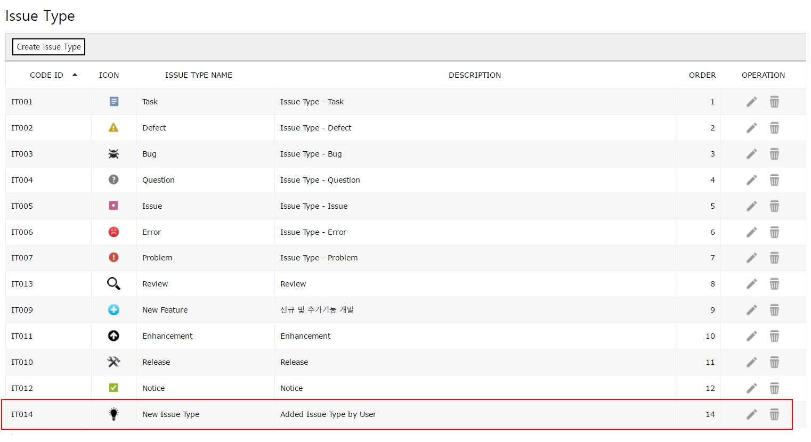
1.4 업무 우선순위 설정
Project - Configuration - Issue Priority
업무의 우선 순위를 표시하며, 처리 기한을 설정할 수 있는 Issue Priority를 설정할 수 있습니다.
-
"Issue Priority" 메뉴를 클릭해 현재 설정된 Issue Priority 목록을 확인할 수 있습니다.
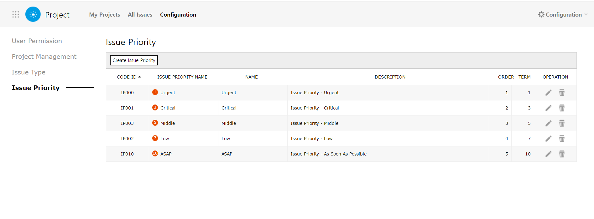
-
"Issue Priority" 화면에서 [Create New Priority] 버튼을 클릭합니다.
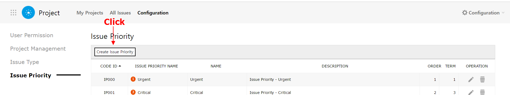
-
"Create Issue Priority" 화면에서 새롭게 추가할 Issue Priority의 정보를 입력합니다.
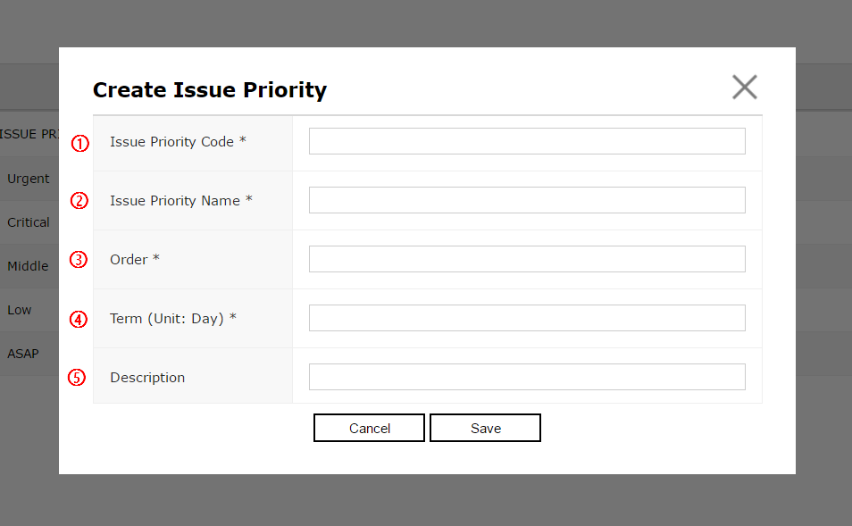
No Name Required Description ① Issue Priority Code Required 새롭게 생성할 Issue Priority을 식별하기 위한 고유 코드를 입력합니다. ② Issue Priority Name Required Issue Priority의 이름을 입력합니다.
여기에 입력된 내용이 Issue Priority의 이름으로 표시됩니다.③ Order Required Issue Priority 목록에서 표시될 순서를 지정할 수 있습니다.
숫자만 입력 가능합니다.④ Term (Unit:day) Required Issue Priority의 처리 기한을 입력할 수 있습니다.
숫자만 입력 가능합니다.
업무 생성 후 Issue Priority 선택 시 시작일로부터 여기에 입력된 값이 자동으로 계산되어 완료일로 표시됩니다.⑤ Description . Issue Priority에 대한 설명을 입력할 수 있습니다. -
[OK] 버튼을 클릭하면 팝업이 종료됩니다. Issue Priority 목록을 통해 새로운 Issue Priority이 추가되었음을 알 수 있습니다.
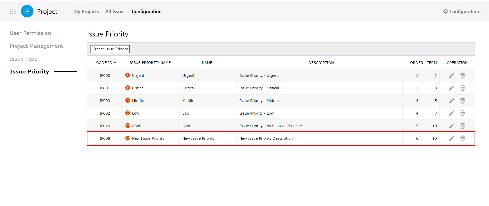
-
새 업무 등록 혹은 기존 업무 편집 시, 추가한 Issue Priority를 사용할 수 있습니다. 업무 등록 및 편집은 새로운 업무 등록 항목을 참고해 주세요.
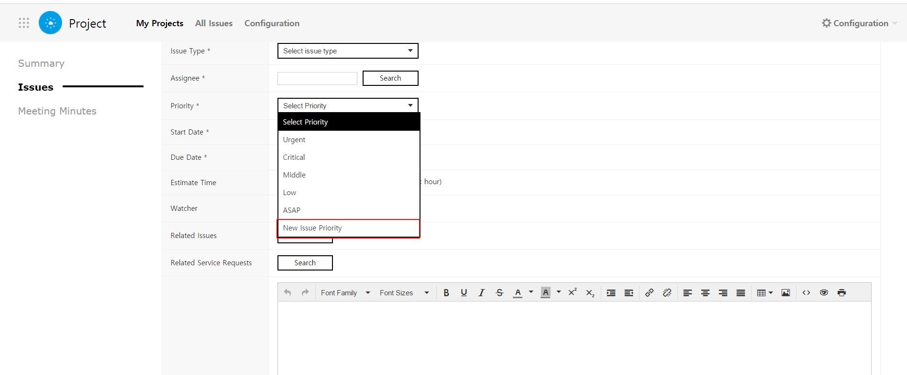
2. 업무 등록 및 진행 상황 관리
새로운 업무를 등록하고, 등록된 업무의 진행 상황을 관리할 수 있습니다. 이를 통해 프로젝트/팀 내 업무의 진행 상황을 파악할 수 있습니다.
2.1 새로운 업무 등록
Project
새로운 업무를 등록합니다.
-
프로젝트/팀 목록에서 업무를 등록할 프로젝트/팀을 클릭합니다.
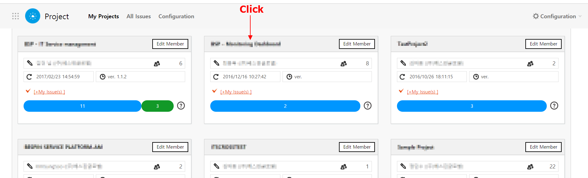
-
좌측 메뉴 중 "Issues" 메뉴를 클릭해 업무 목록으로 이동합니다.
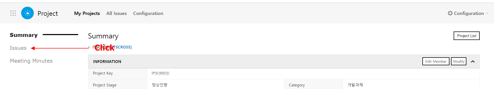
-
"Issues" 화면에서 [Create Issue] 버튼을 클릭합니다.
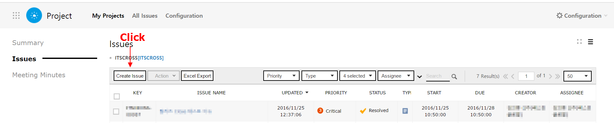
-
"Create Issues" 화면에서 생성할 업무의 정보를 입력합니다.
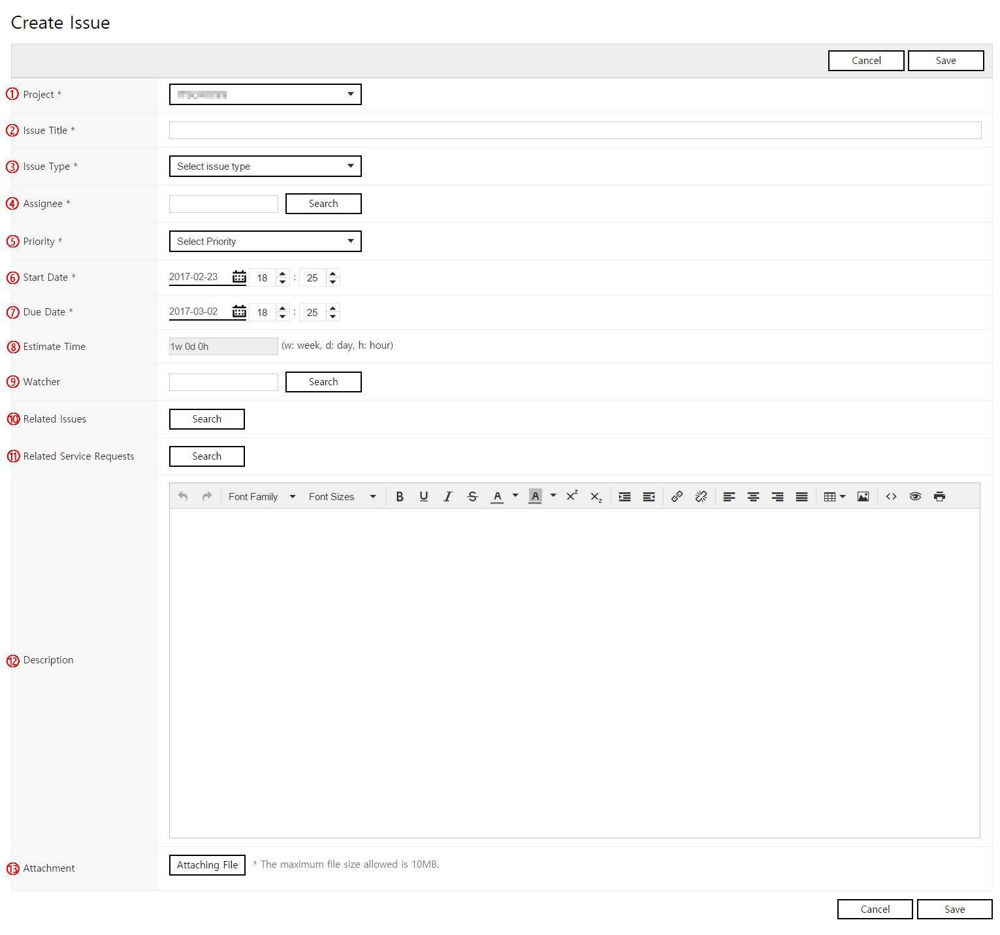
No Name Required Description ① Project Required 업무를 등록할 프로젝트/팀을 선택할 수 있습니다.
선택한 프로젝트가 기본값으로 선택되어 있으며, 드롭다운 메뉴 클릭 시 생성된 프로젝트/팀이 드롭다운 목록으로 표시됩니다.② Issue Title Required 등록할 업무의 이름을 입력합니다. ③ Issue Type Required 업무의 종류를 선택할 수 있습니다.
드롭다운 메뉴 클릭 시 사전에 등록된 Issue Type들이 드롭다운 목록으로 표시됩니다.④ Assignee Required 업무의 담당자를 선택할 수 있습니다.
[Search] 버튼을 클릭해 담당자를 선택할 수 있으며, 한 업무당 한명의 사용자만을 등록할 수 있습니다.⑤ Priority Required 업무의 우선 순위를 선택할 수 있습니다.
드롭다운 메뉴 클릭 시 사전에 등록된 Issue Prioty들이 드롭다운 목록으로 표시됩니다.⑥ Start Date Required 업무의 시작 일/시/분을 선택할 수 있습니다.
기본값으로 현재 날짜가 표시됩니다.⑦ Due Date Required 업무의 완료일을 선택할 수 있습니다.
기본값으로 시작일로부터 선택한 Issue Priority에 설정된 기간이 지난 날짜가 표시됩니다.⑧ Estimate Time . 업무에 투입된 시간이 표시됩니다.
시작일로부터 완료일까지의 시간을 주/일/시로 표시됩니다.⑨ Watcher . 업무의 참조자를 선택할 수 있습니다.
업무의 참조자는 등록된 업무 상태가 변경될 때 이메일로 변경 상태에 대한 알림을 받을 수 있습니다.
[Search] 버튼을 클릭해 참조자를 선택할 수 있으며, 복수의 사용자를 등록할 수 있습니다.⑩ Related Issue . 현재 등록한 업무와 연관이 있는 업무를 지정할 수 있습니다. ⑪ Related Service Request . 현재 등록한 업무와 연관이 있는 업무 요청을 지정할 수 있습니다. ⑫ Description . 업무의 상세 내용을 입력할 수 있습니다. ⑬ Attachment . 업무와 연관이 있는 파일을 업로드할 수 있습니다.
복수의 파일을 업로드할 수 있습니다. -
[Save] 버튼을 클릭해 입력한 내용을 저장하고, "Issues" 화면에서 새로운 업무가 추가되었음을 확인합니다.
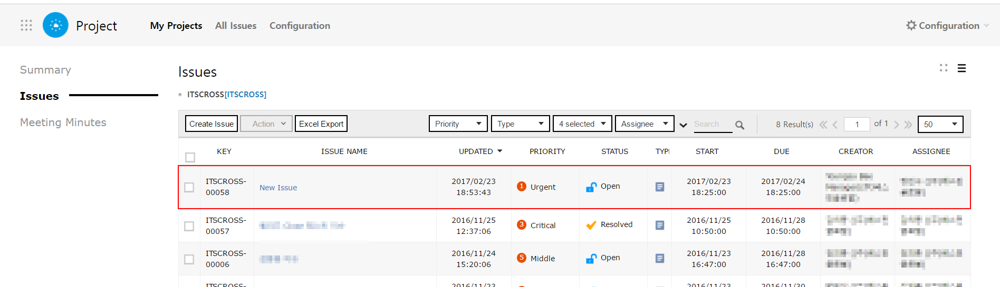
2.2 새로운 회의록 등록
Project
새로운 회의록을 작성합니다.
-
프로젝트/팀 목록에서 회의록을 등록할 프로젝트/팀을 클릭합니다.
-
좌측 메뉴 중 "Meeting Minutes" 메뉴를 클릭해 회의록 목록으로 이동합니다.
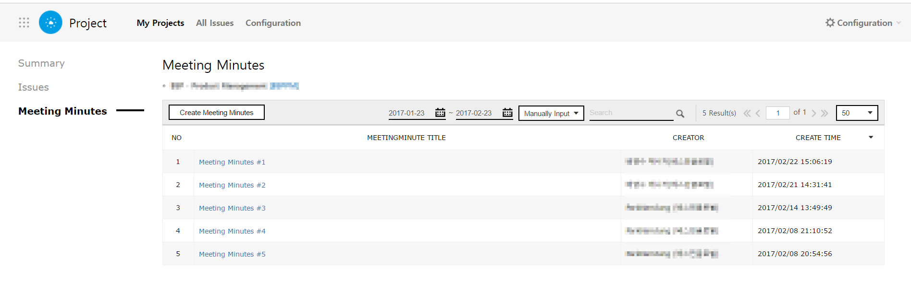
-
"Meeting Minutes" 화면에서 [Create Meeting Minutes] 버튼을 클릭합니다.
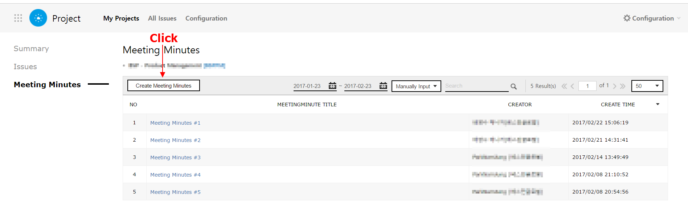
-
"Create Meeting Minutes" 화면에서 회의록을 작성합니다.
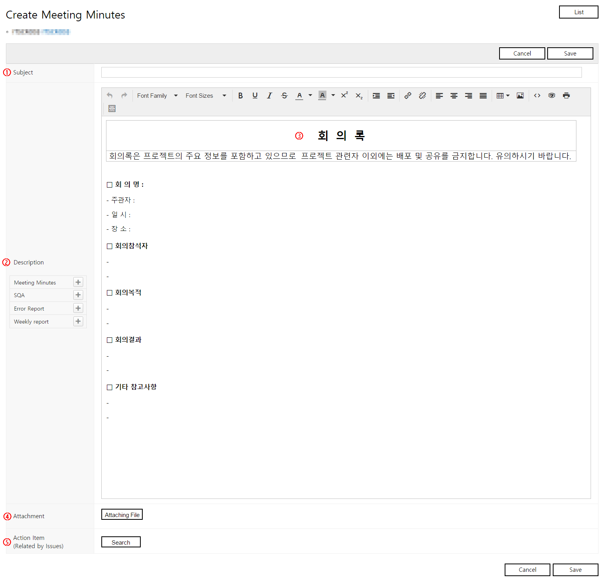
No Name Required Description ① Subject Required 회의록의 제목을 입력할 수 있습니다. ② Description Required 회의록의 내용을 입력할 수 있습니다.
선택 가능한 회의록 양식이 목록으로 표시됩니다.
목록에서 양식을 선택할 수 있습니다.③ Template . 선택한 회의록 양식이 표시됩니다. ④ Attachment . 첨부 파일을 등록할 수 있습니다.
복수의 파일을 업로드할 수 있습니다.⑤ Action Item . 현재 등록한 회의록과 연관이 있는 업무를 지정할 수 있습니다. -
[Save] 버튼 클릭 시 "Confirm" 팝업이 표시됩니다. 이 팝업에서 'Send E-mail Notification' 항목 선택 시, 회의록이 저장되고 프로젝트/팀 멤버들에게 이메일로 새로운 회의록이 등록되었음을 알리는 알림이 전달됩니다.
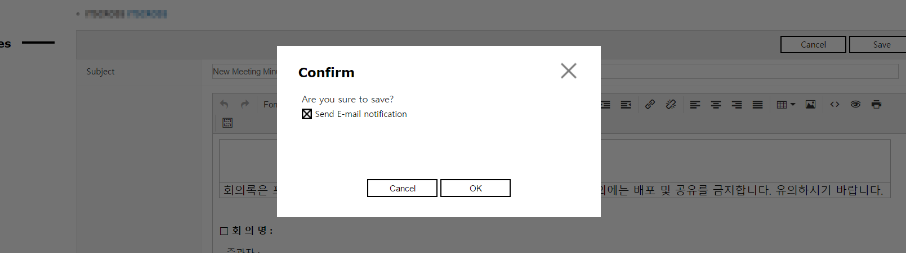
-
"Meeting Minutes" 화면에서 새로운 회의록이 추가되었음을 확인합니다.
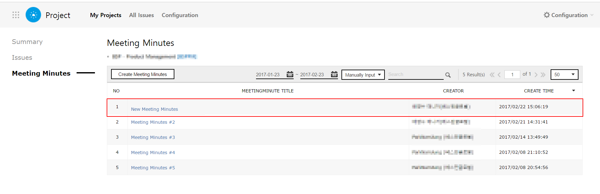
2.3 업무 진행 상황 기록
Project
업무의 진척 상태를 기록합니다. 프로젝트/팀 소속원이 업무의 진행 상황을 확인할 수 있습니다.
-
프로젝트/팀 목록에서 회의록을 등록할 프로젝트/팀을 클릭합니다.
-
업무 목록에서 진행 상황을 기록할 업무를 클릭합니다.
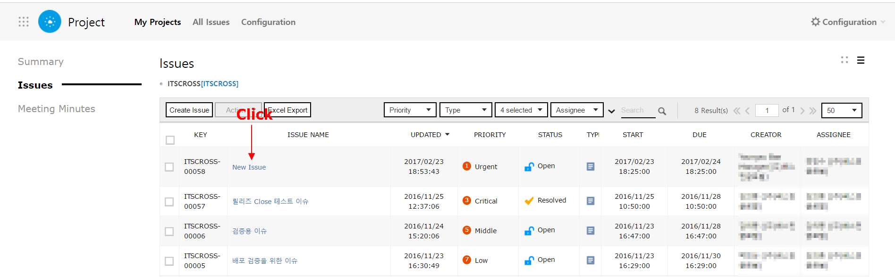
-
업무 상세 내용에서 [Action] 버튼을 클릭하면 현재 업무의 상태를 선택할 수 있는 드롭다운 메뉴가 표시됩니다. 이 드롭다운 메뉴에서 업무의 상태를 선택합니다.
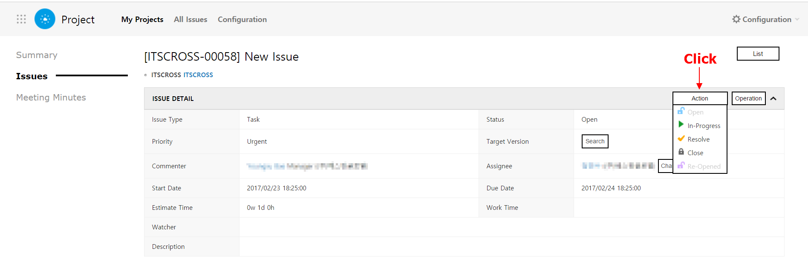
Status Description Open 새로운 업무로 등록되었으나, 아직 업무에 착수하지 않은 상태를 의미합니다. In-progress 담당자가 업무를 처리 중인 상태를 의미합니다. Resolve 담당자가 업무를 완료했으나 최종 검토 혹은 테스트가 필요한 상태를 의미합니다. Close 업무가 완전히 완료된 상태를 의미합니다. Re-Open 이미 완료된 업무였으나 추가 작업 혹은 문제가 발생해 다시 처리해야할 필요가 있는 상태를 의미합니다. -
드롭다운 메뉴에서 업무의 상태를 클릭하면 코멘트를 입력할 수 있는 팝업이 표시됩니다. 업무의 처리 상태에 대한 코멘트를 입력한 후 [OK] 버튼을 클릭합니다.
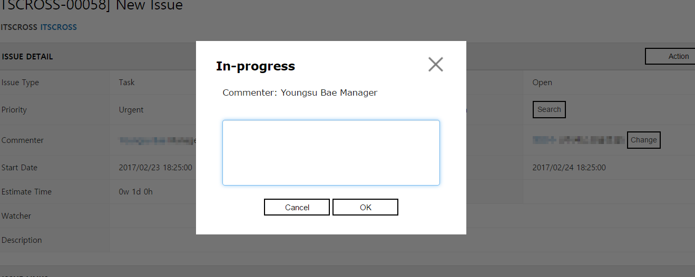
-
업무 상세 내용에서 업무의 상태가 변경된 것을 확인합니다. 업무의 상태 변경 시, Assignee, Watcher로 등록된 사용자에게 이메일로 업무의 상태가 변경되었음을 알리는 알림이 전달됩니다.
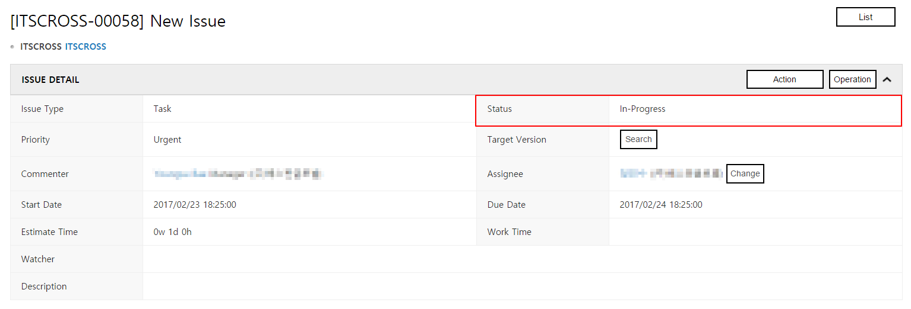
3. 업무 이력 및 연관 업무 관리
3.1 코멘트 작성
Project
업무 처리 과정 중에 발생한 내용에 대해 코멘트를 작성합니다.
-
프로젝트/팀 목록에서 업무가 등록된 프로젝트/팀을 클릭합니다.
-
업무 목록에서 코멘트를 입력할 업무를 클릭합니다.
-
업무 상세 내용 화면에서 Comment 영역에 코멘트를 입력 후, [Save] 버튼을 클릭합니다.
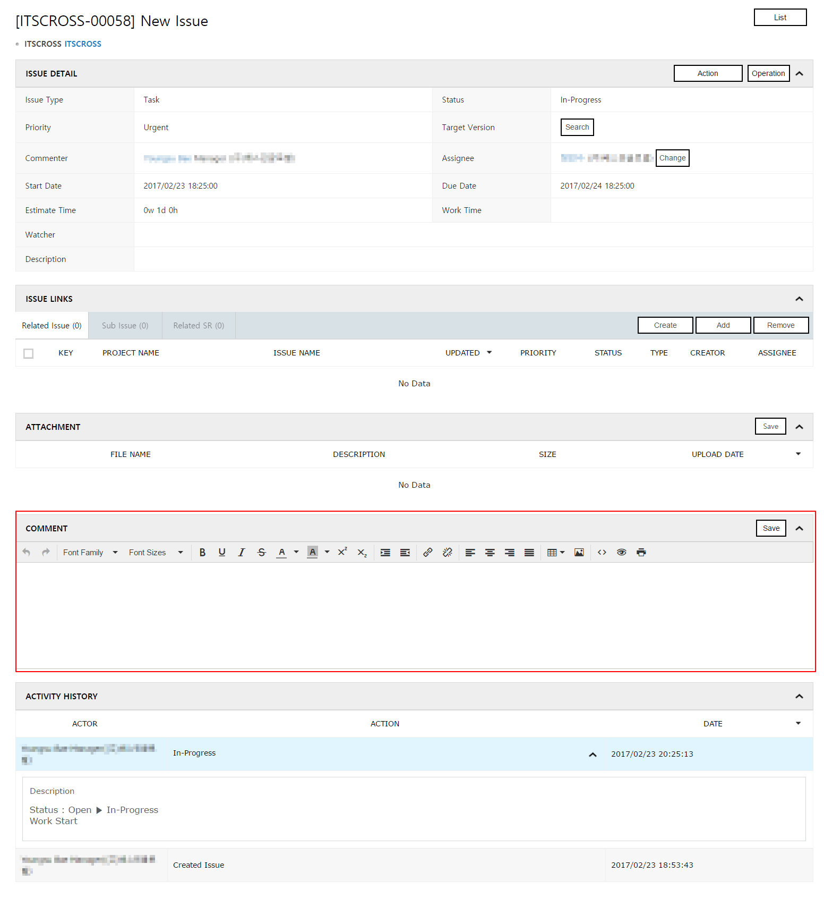
-
업무 상세 내용 화면에서 Activity History 영역에서 입력한 코멘트를 확인할 수 있습니다.
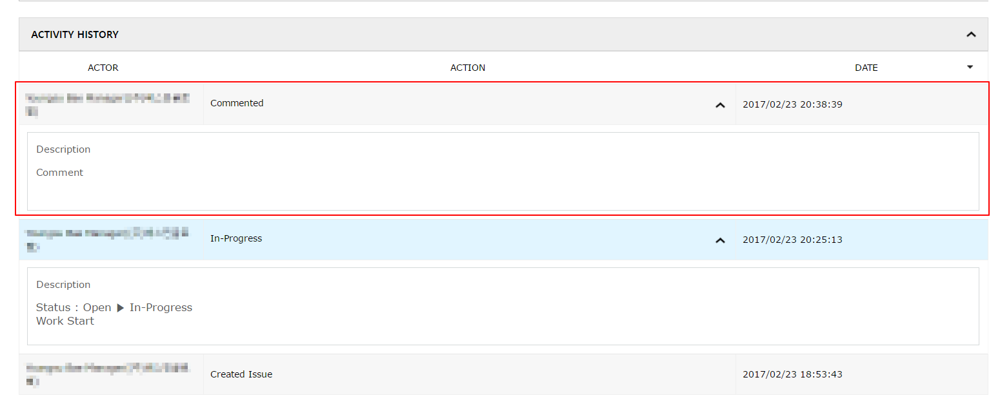
- 알람를 해결하기 위한 작업을 수행합니다. 이 알람를 해결하기 위한 업무는 Project App에 등록합니다. 알람 해결과 관련된 업무의 등록은 아래 4. 알람 이력 및 연관 업무 관리 내용을 참고해 주세요.
3.2 연관 업무 등록
Project
등록된 업무와 연관이 있는 업무/업무 요청을 등록할 수 있습니다. 이를 통해 업무간의 연결/상관 관계를 확인할 수 있습니다.
-
프로젝트/팀 목록에서 업무가 등록된 프로젝트/팀을 클릭합니다.
-
업무 목록에서 연관/하위/업무 요청을 연결할 업무를 클릭합니다.
-
Issue Links 목록에서 연결할 업무의 종류에 맞는 탭을 클릭합니다.

Type Description Releated Issue 현재 선택한 업무와 연관이 있는 업무를 의미합니다. Sub-Issue 현재 선택한 업무의 하위 업무 입니다.
업무를 작은 단위로 쪼개서 등록할 수 있습니다.Related SR 현재 업무를 요청한 업무 요청을 의미합니다.
Service Request에 등록된 업무 요청을 연결할 수 있습니다. - [Create] 버튼을 클릭해 새 연관/하위 업무를 등록하거나, [Add] 버튼을 클릭해 기존 업무를 연관/하위/업무 요청으로 등록할 수 있습니다.
-
[Add] 버튼을 클릭하면 "Search for Issue/SR" 팝업이 표시됩니다. 팝업에 로그인한 사용자가 소속된 프로젝트/팀의 모든 업무/업무 요청이 표시되고, 연결할 업무/업무 요청을 선택할 수 있습니다.
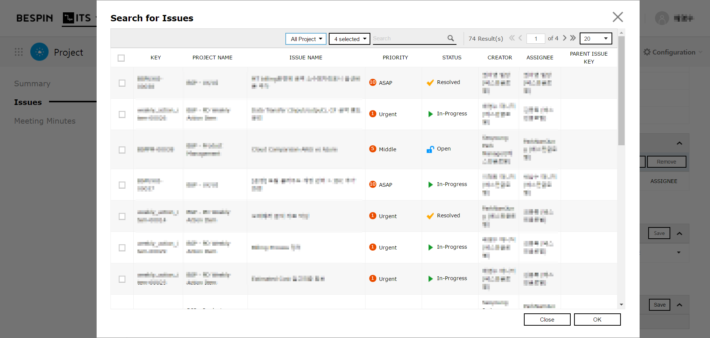
-
연결할 업무/업무 요청 선택 후 [OK] 버튼을 클릭합니다. "Issue Links" 영역에서 업무/업무 요청이 연결되었음을 확인할 수 있습니다.
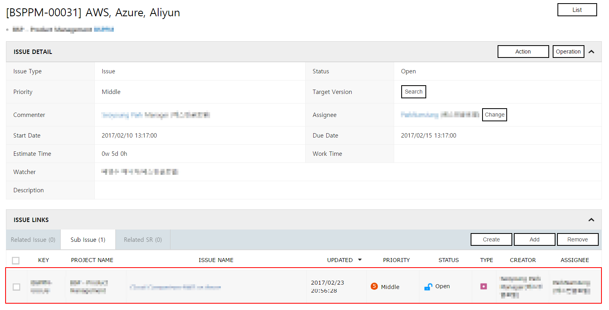
3.3 업무 이력 보기
Project
업무의 진행 이력을 확인할 수 있습니다.
-
프로젝트/팀 목록에서 업무가 등록된 프로젝트/팀을 클릭합니다.
-
업무 목록에서 진행 이력을 확인할 업무를 클릭합니다.
-
업무 상세 내용 화면의 Activity History 영역에서 업무의 상태 변경, 담당자 변경, 코멘트 등의 진행 이력을 확인할 수 있습니다.
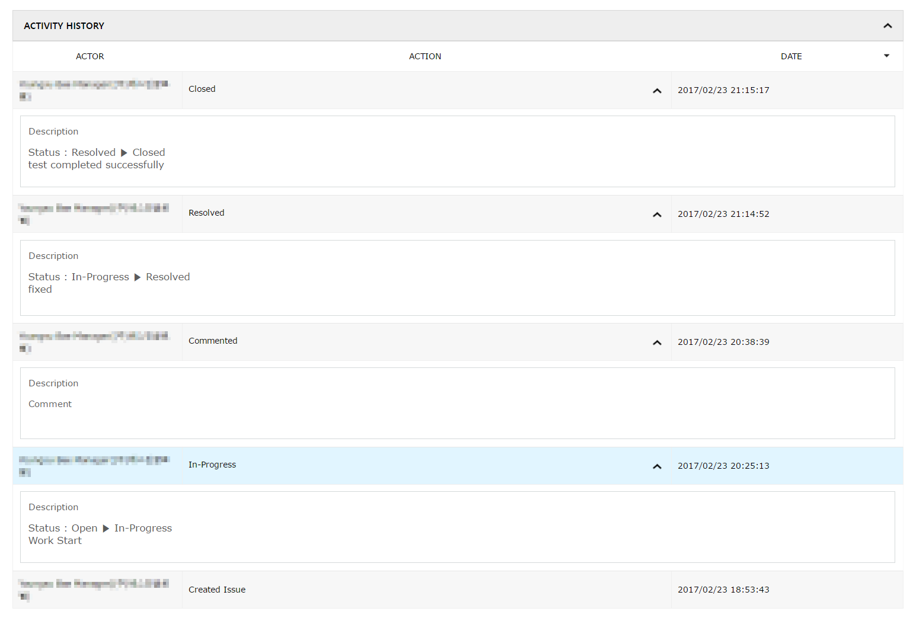
4. 업무 이력 검색
조건을 설정하고 키워드를 입력해 찾고자하는 업무를 검색하고, 그 내용을 확인할 수 있습니다.
4.1 조건을 설정해 검색
Project
-
검색할 조건을 선택합니다. [Priority], [Type], [Status], [Assignee] 버튼을 클릭하면 드롭다운 메뉴로 선택 가능한 조건이 표시됩니다.
-
'Priority' 조건 선택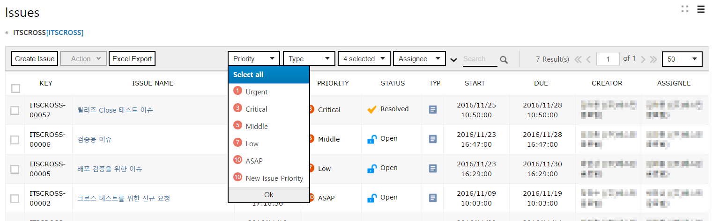 -
Type' 조건 선택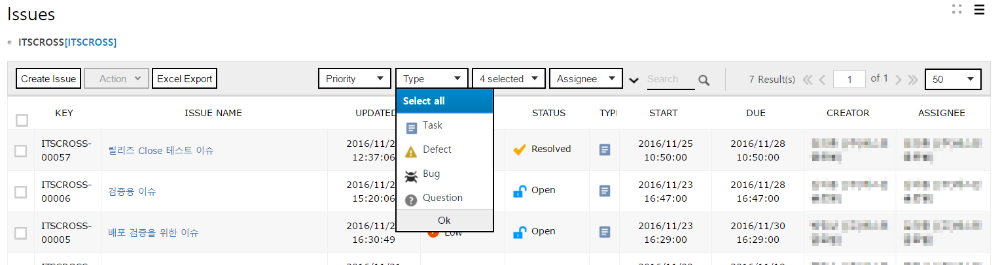 -
'Status' 조건 선택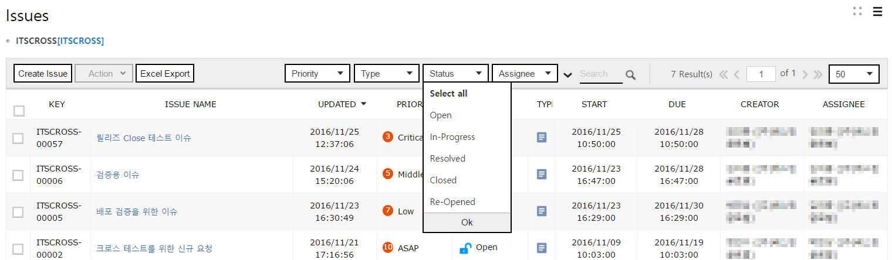 -
'Asignee' 조건 선택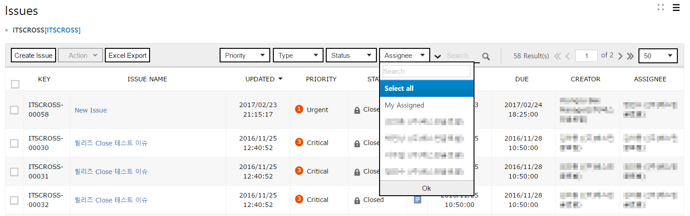
-
-
드롭다운 메뉴의 [OK] 버튼을 클릭합니다.
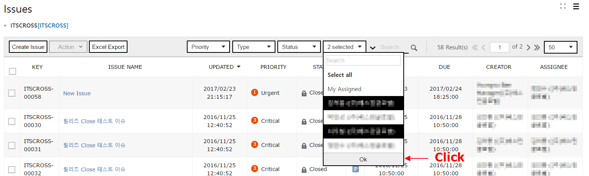
-
선택한 조건의 검색 결과를 업무 목록에서 확인할 수 있습니다.
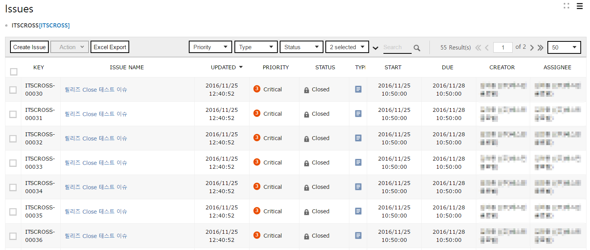
4.2 키워드를 입력해 검색
Alarm
-
검색창에 검색할 키워드를 입력 후, [Enter]키 혹은 [검색] 버튼을 클릭합니다.
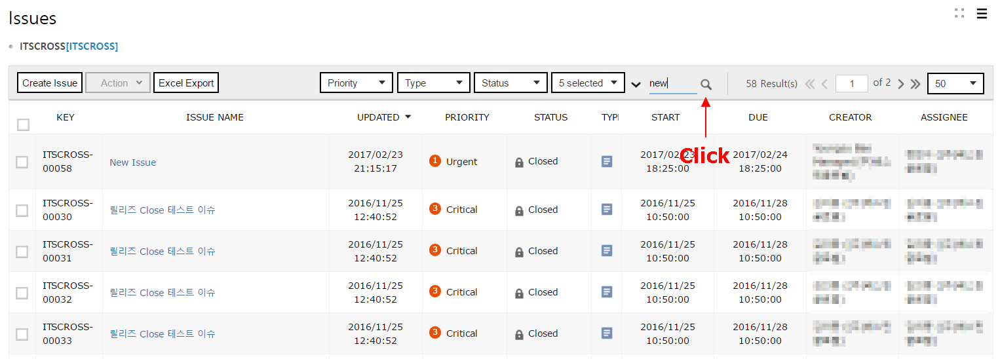
-
목록에 입력한 키워드와 일치하는 제목을 가진 결과가 표시됩니다. 입력한 키워드와 일치하는 텍스트가 하이라이팅되어 표시됩니다.
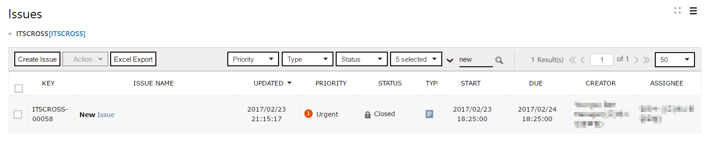